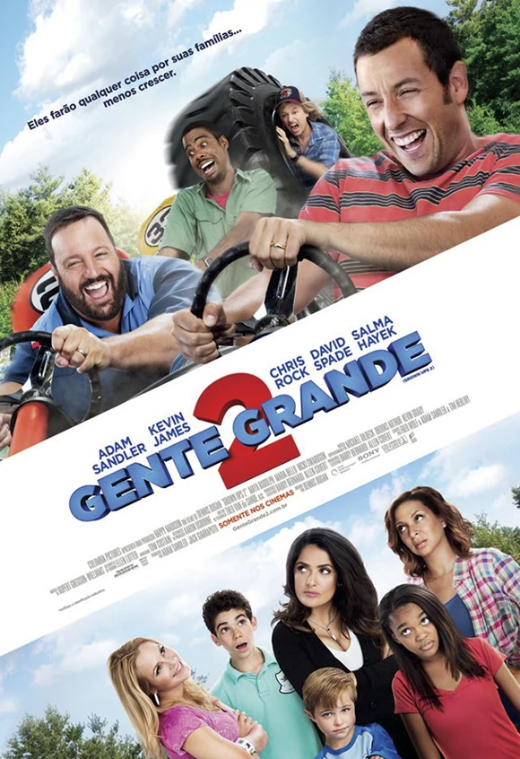

Gente Grande
Gente Grande (Grown Ups) acompanha um grupo de amigos de infância que se reencontra anos depois, agora adultos e com suas próprias famílias, para o funeral de um antigo treinador de basquete. Durante o encontro, eles revivem memórias da juventude, enfrentam diferenças de personalidade e enfrentam situações hilárias envolvendo filhos, relacionamentos e amizades, mostrando que, apesar do tempo, os laços de amizade e as lembranças continuam vivos.